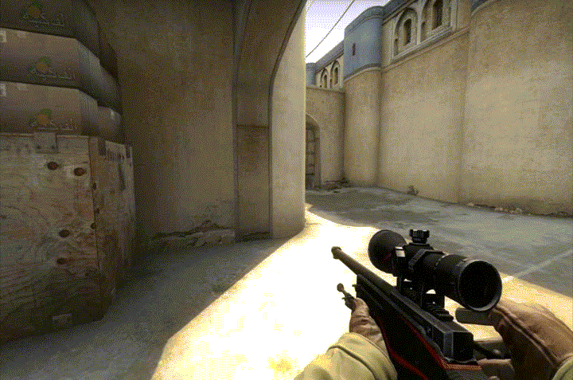

Топ игр
csgo
 downloadCounter-Strike: Global Offensive (CS:GO; с англ. — «Контрудар: глобальное наступление») — многопользовательская компьютерная игра, разработанная компаниями Valve и Hidden Path Entertainment.
ПодробнееLittle Nightmares (с англ.«Маленькие кошмары») — мультиплатформенная компьютерная игра в жанре платформера с элементами квеста и хоррора, разработанная шведской компанией Tarsier Studios и выпущенная компанией Bandai Namco Entertainment. Игра вышла 28 апреля 2017 года на платформах Microsoft Windows, PlayStation 4, Xbox One.
ПодробнееHitman: Absolution (букв. с англ. — «Наёмный убийца: Отпущение грехов») — компьютерная игра 2012 года в жанре стелс-экшена, разработанная датской студией IO Interactive и изданная Square Enix. Пятая игра серии Hitman.
Подробнее